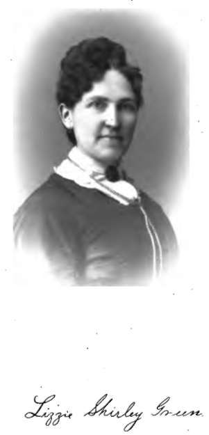

Appendix. Chapter XXL. Mrs. Green's Medial History
Description
This section is from the book "A Book Written By The Spirits Of The So-Called Dead", by Carl Gustaf Helleberg. Also available from Amazon: A Book Written by the Spirits of the So-Called Dead.
Appendix. Chapter XXL. Mrs. Green's Medial History
The following is a partial history of the development and mediumistic experiences of Mrs. Lizzie S. Green, the medium chosen by the spirits in transmitting the matter contained in this volume:
She was born in Jefferson county, Kentucky, on the second day of December, 1844, and consequently at this writing is in her thirty-eighth year.
The following narrative of her mediumship was written by her husband, dictated by herself, and when written out was pronounced by her to be correct, and she adopts it her own. It is believed that this briefly recited history can not fail to be interesting to the general reader, since it contains matter and experiences not only absorbingly interesting but truly wonderful, and evidences the existence of a power that all thoughtful and candid persons will agree is worthy of investigation.
Those who have enjoyed Mrs. Green's acquaintance socially for years invariably speak of her as a truly, honest woman, faithful wife, loving mother, steadfast friend, in intellectual capacity far above and beyond her educational advantages, and as possessed of mauy other sterling qualities of heart. Those who have come in contact with her in the exercise of her medial gifts can not fail to have been impressed with her frankness, simplicity of character, and the unquestionable honesty of her nature.
This tribute to her integrity and moral worth is given because well merited, and by one who not desiring notoriety and fame wishes simply to be known as A Friend.
Narrative Of Her Mediumship
"My conscious mediumship began in the fall of 1868. It commenced by the opening of my spiritual vision, enabling me to see spirits, scenes, landscapes, etc., in their spirit world. When in the proper state or condition of passivity I have been permitted to behold innumerable throngs of spirits, and at times to hear their voices. The phase of clairaudience added to my clairvoyance I prized highly, and sorely regret that shortly afterwards a fit of sickness deprived me of the gift of hearing spirit voices, and for a time seriously retarded my other mediumistic development. I am happy to be able to state, however, that with my gradual restoration to health my clairvoyant perceptions began to increase in power and beauty, and now the voices of the arisen dear ones again greet my anxious and ever attentive ears.
" I desire to state in this connection that in all my intercourse with spirits they have never deceived me in a single isolated instance. They have always been truthful and straightforward in their statements and dealings with me.
" In the earlier stages of my mediumship and still sometimes I was frequently controlled to personate the peculiar and characteristic idiosyncracies of spirits during earth life, and to delineate their sickness and death. Sometimes I would be rendered entirely unconscious and at other times only partially so. I shall never forget one memorable occasion of complete unconsciousness and the occurrence during it as related subsequently by eye witnesses. An old lady was present in the circle who I had never met before, and of whose history I had no means of obtaining the slightest knowledge. At the time I was wholly ignorant as to whether she had ever been a mother or the maternal head of a family, until I saw and described minutely a spirit standing by her side, who she readily recognized as her deceased son. ' What was the cause of his death?' she eagerly inquired. Almost instantly my consciousness was suspended, preceded by a violent tremulous motion all over my frame. " I fell to the floor in a violent fit, and so terrible was it, and so true to nature in all its terrible details that no little alarm was manifested by the various members of the circle. It thoroughly demoralized and threw them into consternation. I need only add that old Mother Thompson (for that was her name) has never since doubted the return of the spirit of her son George, for the poor man had not only suffered a quarter of a century from that appalling affliction, epileptic fits, but actually died in one. I soon recovered my normal condition and received the apology from the spirit for having used me so roughly, stating that his extreme anxiety to convince his beloved mother of his presence induced him to disregard delicacy and to overcome all obstacles in the way of the accomplishment of his purpose.
" A little girl came to me on a certain occasion and said to me, ' Please go and see my mother and tell her I am not dead.' ' Where does your mother live? ' I inquired. After giving me the necessary directions where and how to find her, I said: ' But your mother is a stranger to me, and perhaps if I go to her on an errand of that kind she will drive me from her door.' 'No she won't,' interposed the little pleader, ' she will be glad to learn that I am not under the cold ground but alive.' I marshaled the courage to go, yet I greatly feared the result. I was met at the door by the one I desired to see, and without giving sufficient time to explain the object of my call, I was cordially welcomed indoors. After being seated, and after the usual courtesies had passed, I opened the subject by saying, ' You have a little girl that has gone to the other world ?' ' Yes' said she, falling into tears,' she was a dear, darling child, and I have had no rest since she left me. She was the idol of my heart, and it seems that I can never become reconciled to her death. Really, at times, I can scarcely realize that she is dead.' Here a pause ensued, and her grief was so intense that the waters of sympathetic sorrow involuntarily flowed down my own cheeks. Rallying, however, as quickly as I could, I said : 'My good woman, your Mary is not dead. She stands there by your side and wants me to say .to you, ' Mother, I am not dead ; do not weep for me, for I am still with you.' ' How ! What does this mean ?' exclaimed the mother in apparent bewilderment, ' I saw her poor little precious body consigned to the cold and cheerless grave.' 'Yes,' I interrupted, 'but her spirit—the immortal and only valuable part of herself—was not buried beneath the ground. Hold, she wishes me to describe her, and further, to prove her identity. She is a bright, blue-eyed girl of eleven or twelve summers, light auburn hair naturally inclined to curl, and falls in beautiful ringlets around her neck, forehead of the Grecian mold, face even and rounded, with a mark resembling a raspberry under her right eye, and she died from scarlatina.' ' Why, did you know Mary when she was living?' was immediately asked. I assured her I did not. 'Does the description fit her?' I inquired. 'Perfectly,' was the reply; 'who told you about her,' she added. I answered: " My good woman, believe me, until to-day I did not know you were in existence. The facts I have stated to you I obtained from your Mary without the slightest knowledge of either your or her history.' After further conversation on the subject, and after describing other spirits, whom she readily recognized, the interview terminated, with a pressing invitation to return, and the assurances that she had derived from my visit inexpressible joy and happiness. In a few days thereafter I was unexpectedly called away from St. Louis and have never returned. Letters from friends who were cognizant of the circumstance as related by herself, inform me that Mrs. Collins is happy in the knowledge of spiritualism, has become reconciled to the temporary absence as to physical form of her child, and sends me her benedictions.
Continue to:
- prev: Margaret Fuller
- Table of Contents
- next: Appendix. Chapter XXL. Mrs. Green's Medial History. Part 2